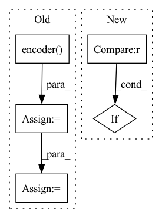

Pattern ID :21916
Before Change
return self.body.init_hidden(self.input_size[1:], batch_size)
def forward(self, x, hidden, num_repeats=1):
h = self.encoder( x)
h, hidden = self.body(h, hidden, num_repeats)
h_p = self.head_p(h)
h_v = self.head_v(h)
return h_p, torch.tanh(h_v), hidden
After Change
return torch.stack(hs), torch.stack(cs)
def forward(self, x, hidden, num_repeats):
if hidden is None :
hidden = self.init_hidden(x.shape[-2:], x.shape[:-3])
hs = [hidden[0][i] for i in range(self.num_layers)]In pattern: SUPERPATTERN
Frequency: 3
Non-data size: 5
Instances Fragment ID: 69710759
Project Name: dena/handyrl
Commit Name: c2731f3af6293f7583d95d8546e41ef8c5bfc5af
Time: 2020-07-06
Author: a.a.b.a.b.c.a.b.c.d.abcd1234@gmail.com
File Name: model.py
M Class Name: DRC
N Class Name: DRC
M Method Name: forward(4)
N Method Name: forward(4)
M Parent Class: nn.Module
N Parent Class: BaseModel
M File Name: model.py
N File Name: model.py
M Start Line: 307
M End Line: 312
N Start Line: 216
N End Line: 225
Before Change
enc_convs, enc_rnns, dec_convs, dec_rnns = self._build_encoder_decoder()
self.encoder = Encoder(enc_convs, enc_rnns).to(self.device)
self.forecaster = Forecaster(dec_convs, dec_rnns).to(self.device)
in_shape = self.encoder( torch.zeros((1, 2, *self.img_shape), device=self.device))
out_shape = self.forecaster(in_shape)
print(in_shape.shape, out_shape.shape)
exit(0)
self.NON_CONFIG_VARS.extend(["encoder", "forecaster"])After Change
final_h, final_w = convtransp_output_shape((next_h, next_w),
self.dec_conv_k[-1], self.dec_conv_s[-1], self.dec_conv_p[-1])
if (self.img_h, self.img_w) != (final_h, final_w) :
raise AttributeError(f"Model layer hyperparameters yield wrong output size: "
f"{(final_h, final_w)} (expected: {(self.img_h, self.img_w)})")
Fragment ID: 69710743
Project Name: ais-bonn/vp-suite
Commit Name: a71498d763c84e72029c5921e390f8dff48fd61d
Time: 2022-02-11
Author: boltres@ais.uni-bonn.de
File Name: vp_suite/models/precipitation_nowcasting/ef_blocks.py
M Class Name: Encoder_Forecaster
N Class Name: Encoder_Forecaster
M Method Name: __init__(2)
N Method Name: __init__(2)
M Parent Class: VideoPredictionModel
N Parent Class: VideoPredictionModel
M File Name: vp_suite/models/precipitation_nowcasting/ef_blocks.py
N File Name: vp_suite/models/precipitation_nowcasting/ef_blocks.py
M Start Line: 137
M End Line: 165
N Start Line: 143
N End Line: 147
Before Change
source_ids = source_ids.view(-1, self.args.block_size)
attention_mask = source_ids.ne(self.tokenizer.pad_token_id)
outputs = self.encoder(input_ids=source_ids, attention_mask=attention_mask,
labels=source_ids, decoder_attention_mask=attention_mask, output_hidden_states=True)
hidden_states = outputs["decoder_hidden_states"][-1]
eos_mask = source_ids.eq(self.config.eos_token_id)
if len(torch.unique(eos_mask.sum(1))) > 1:
raise ValueError("All examples must have the same number of <eos> tokens.")
vec = hidden_states[eos_mask, :].view(hidden_states.size(0), -1,
hidden_states.size(-1))[:, -1, :]
logits = self.classifier(vec)
prob = F.softmax(logits)
if labels is not None:
loss_fct = CrossEntropyLoss()
loss = loss_fct(logits, labels)After Change
if self.args.model_type == "codet5":
vec = self.get_t5_vec(source_ids)
elif self.args.model_type == "bart" :
vec = self.get_bart_vec(source_ids)
elif self.args.model_type == "roberta":
vec = self.get_roberta_vec(source_ids) Fragment ID: 69710753
Project Name: salesforce/codet5
Commit Name: 0bf3c0c43e92fcf54d9df68c793ac22f2b60aad4
Time: 2021-10-29
Author: 337111657@qq.com
File Name: models.py
M Class Name: CloneModel
N Class Name: CloneModel
M Method Name: forward(3)
N Method Name: forward(3)
M Parent Class: nn.Module
N Parent Class: nn.Module
M File Name: models.py
N File Name: models.py
M Start Line: 111
M End Line: 125
N Start Line: 103
N End Line: 116